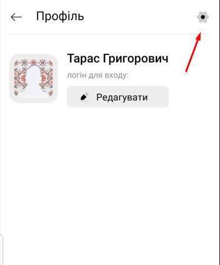
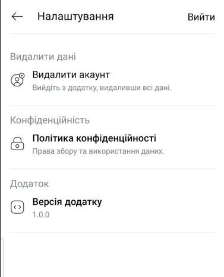

Видалення даних з застосунку "Пісні з України"
Користувачі, які авторизувалися у застосунку за допомогою електронної пошти та пароля, можуть видалити свої дані безпосередньо в додатку наступним чином:
- Увійдіть у застосунок, ввівши логін та пароль.
- У верхньому правому куті оберіть іконку "Профіль".
- Далі у верхньому правому куті оберіть іконку "Налаштування".
- У меню налаштувань оберіть опцію "Видалити акаунт".
Користувачі, які користуються застосунком без авторизації, жодні персональні дані не збираються.
Якщо у вас виникли труднощі з видаленням акаунта, будь ласка, напишіть нам на адресу:
sqras.mail@gmail.com

